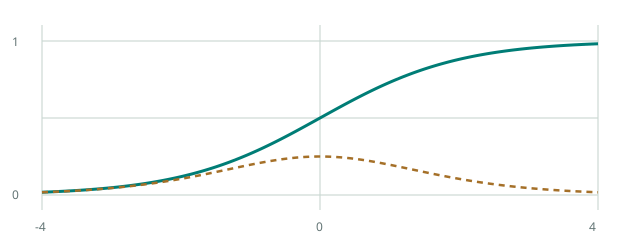

Make the
mathematics visible.
Explore symbolic formulas, inspect gradients, and understand how your model learns.
A mathematical notebook. An executable toolkit.
Built with Python, NumPy, and SymPy.
python -m pip install neurogebraPython 3.9+ MIT licensed Open source
An equation you can inspect.
One input. A value. A gradient.

Library-generated curves and derivatives. Interactive controls inspect saved samples; Python does not execute in this page.
See the NeuroGebra code
from neurogebra import MathForge
f = MathForge().get("sigmoid")
value = f.eval(x=0.0)
slope = f.gradient("x").eval(x=0.0)From an equation to an experiment
Understand it. Run it. Inspect it.¶
NeuroGebra connects readable mathematics with small, inspectable experiments. Start with a formula, follow its derivatives, build a model, and examine what changed.
-
01 / Read the formula
Search 285 expressions, compose your own, render LaTeX, and derive exact symbolic gradients with SymPy.
-
02 / Follow the gradient
Build scalar and tensor operation graphs. Connect a forward calculation with the reverse-mode derivative that follows it.
-
03 / Build an experiment
Combine neural layers, choose an optimizer, and train a small NumPy model with predictions and checkpoints you can inspect.
-
04 / Read the training
Bring formulas, gradients, events, and diagnostic summaries into the same workflow with the Training Observatory.
-
05 / Explore scientific ideas
Experiment with boundary data and equation residuals using the educational, finite-difference PINN solver.
-
06 / Measure execution
Compile supported symbolic expressions to C or CUDA kernels, and measure performance with explicit precision and hardware boundaries.
A path for the way you work
Choose your next question.¶
-
I want to understand the mathematics.
Evaluate a formula, inspect its derivative, and connect the result to a small Python program.
-
I want to build and inspect a model.
Follow the workflow from array shapes and data preparation through training, evaluation, and observability.
-
I want a complete experiment.
Open a focused recipe or a project notebook, then adapt it to the question you are investigating.
Know your execution path. Neural models and PINNs train with NumPy. Native C/CUDA acceleration applies to supported expression evaluations. Dataset loaders include generated teaching distributions. Read the capabilities and limits before interpreting an experiment.
The training observatory
See what learning
actually changes.
Follow the loss, inspect the update, and connect the numbers to the mathematics. Your experiment comes with a trail you can read.
Explore the ObservatoryA recorded NumPy run fitting y = 2x + 1 with one Dense layer, 64 samples, SGD, and seed 7. Reproduce it with scripts/generate_site_data.py.
- 01 / 80
2.629502 - 10 / 80
0.631667 - 20 / 80
0.190997 - 40 / 80
0.019716 - 80 / 80
0.000213
Learned weight 1.9765 · bias 1.0000. These are recorded results, not a live benchmark.
import numpy as np
from neurogebra import Layer, Model
np.random.seed(7)
X = np.linspace(-1, 1, 64).reshape(-1, 1)
y = 2 * X + 1
model = Model([Layer("dense", units=1)])
model.compile(loss="mse", optimizer="sgd",
learning_rate=0.08, log_level="basic", metrics=[])
model.fit(X, y, epochs=80, batch_size=64,
validation_split=0)Your next experiment
Start with a question.
Follow the mathematics.
Created by Fahim Sarker and the open-source community. Build it with us.